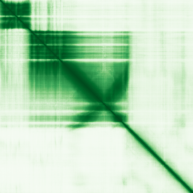
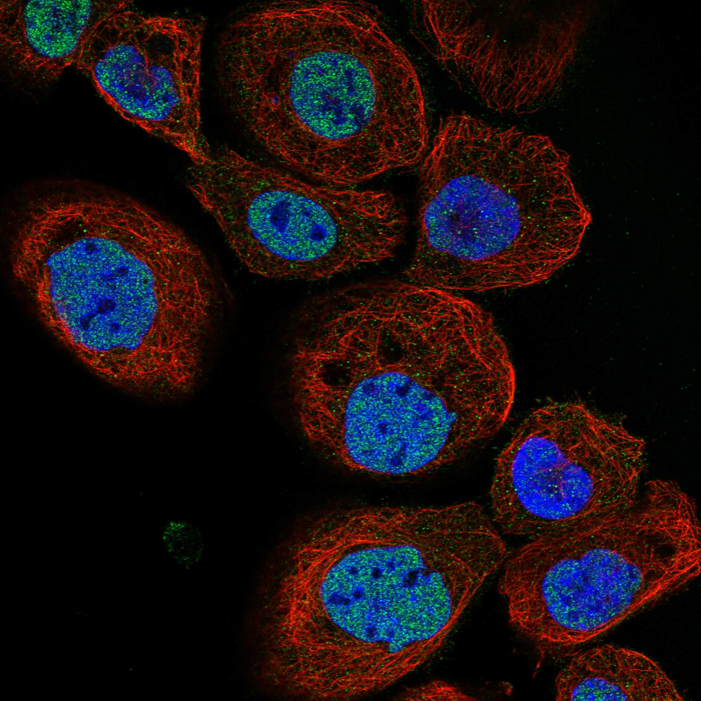
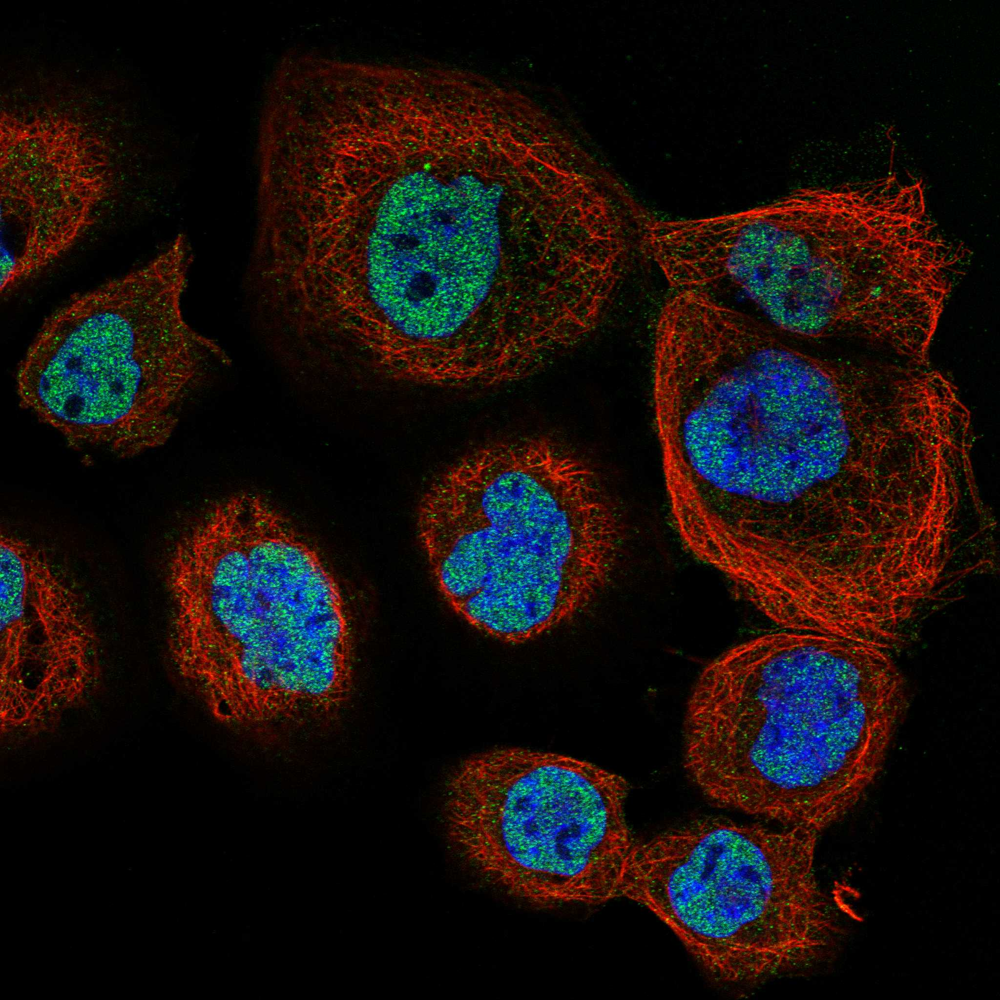

type: protein-evaluation gene: "TRIM8" date: 2026-06-01 tags: [protein-scout, nuclear-body, evaluation] status: scored ---
TRIM8 核蛋白评估报告
1. 基本信息
| 项目 | 内容 |
|---|---|
| 基因名 / 别名 | TRIM8 / GERP, RNF27 |
| 蛋白全名 | E3 ubiquitin-protein ligase TRIM8 |
| 蛋白大小 | 551 aa / 61.5 kDa |
| UniProt ID | Q9BZR9 |
2. 评分总览
| 维度 | 得分 | 权重 | 加权 | 摘要 | |
|---|---|---|---|---|---|
| 核定位特异性 | 7/10 | x4 | 28.0 | UniProt: Nucleus nuclear body (ECO:0000269); HPA Nucleoplasm main; PML body IDA | |
| 蛋白大小 | 7/10 | x1 | 7.0 | 551 aa, 61.5 kDa | |
| 研究新颖性 | 2/10 | x5 | 20.0 | Strict=89 | |
| 三维结构 | 5/10 | x3 | 15.0 | AlphaFold pLDDT 71.0; 32.1% <50; 无 PDB | |
| 调控结构域 | 7/10 | x2 | 14.0 | TRIM/RBCC: RING finger (E3 ligase) + B-box + coiled-coil | |
| PPI 网络 | 6/10 | x3 | 18.0 | SOCS1 (0.946), MAP3K7 (0.795), PIAS3 (0.764); innate immune signaling | |
| 加权总分 | 92/180******** | 102.0/180 | |||
| 互证加分 | +2.0 | UniProt nuclear body + HPA Nucleoplasm 一致 | |||
| 归一化总分 (÷1.83) | 50.3/100******** | 56.8/100 |
PubMed strict: 89
3. 核定位证据
| 来源 | 定位 | 可信度 |
|---|---|---|
| UniProt | Cytoplasm (ECO:0000269 x2); Nucleus (ECO:0000269 x2); Nucleus, nuclear body (ECO:0000269) | Experimental |
| GO-CC | PML body IDA:UniProtKB; nucleus IMP:UniProtKB; cytoplasm IDA:UniProt | Direct assay |
| HPA (IF) | Nucleoplasm (main), Vesicles/Cytosol (additional); Reliability: Supported | IF detection |
HPA IF 状态: IF available (non-standard format detection)。HPA 记录 Nucleoplasm 为主定位，Vesicles/Cytosol 为附加定位。抗体可靠性 Supported。较早批次 IF 图像存在（red_green channel only）。

PAE 状态: 已获取 PAE 图像。AlphaFold pLDDT 71.0 (mean), 48.8% >90, 32.1% <50。TRIM 家族典型的 RING/B-box/coiled-coil 折叠域预测较好，C 端 SPRY/B30.2 区域可能有 IDR 成分。
4. PPI 网络
| Partner | Source | Score/Evidence |
|---|---|---|
| SOCS1 | STRING | 0.946 (experimental 0.198, textmining 0.935) |
| MAP3K7 | STRING | 0.795 (experimental 0.738) |
| PIAS3 | STRING | 0.764 (experimental 0.292, textmining 0.678) |
| TRAT1 | STRING | 0.794 (textmining) |
| UBE2D1 | STRING + IntAct + UniProt | STRING co-occurrence; IntAct two hybrid array |
| UBE2L6 | STRING + IntAct + UniProt | IntAct two hybrid array |
核心发现: TRIM8 的 PPI 网络围绕 SOCS1 和 PIAS3 两个关键调控节点。SOCS1 是 JAK/STAT 信号抑制因子 -- TRIM8 通过 K63-linked poly-Ub 促进其降解以激活 IFN-gamma 信号。PIAS3 是 STAT3 的 SUMO E3 连接酶抑制剂 -- TRIM8 通过降解或核排出 PIAS3 来调控 STAT3 活性。
IntAct 15 条记录（含多个 UBE2 泛素结合酶互作）。UniProt 记录 23 个互作 partner（含 LNX1, TARDBP, RNF168 等）。
5. 结构域与染色质调控潜力
| 来源 | 结构域 |
|---|---|
| InterPro | IPR001841 (Znf RING), IPR013083 (Znf RING/FYVE/PHD), IPR017907 (Znf RING CSHC4), IPR027370 (RING-HC), IPR051051 (TRIM8-like), IPR058030 (TRIM8 PRY/SPRY) |
| Pfam | PF25600 (RING-HC), PF13445 (RING-HC) |
TRIM8 具有典型的 TRIM/RBCC 基序：RING finger（E3 泛素连接酶活性）、B-box（锌指蛋白互作）、coiled-coil（二聚化）。C 端 PRY/SPRY (B30.2) 结构域可能介导底物识别。核定位信号位于 coiled-coil 区域附近。通过调控 SOCS1/PIAS3/STAT3 轴间接参与转录调控，非直接染色质 reader/writer。
核体特异性: GO-CC 含 PML body (IDA:UniProtKB)，PML nuclear body 是 SUMOylation 和转录调控枢纽，TRIM8 定位于此提示其在核内 sumoylation/ubiquitination crosstalk 中的功能。
6. 总体评价
TRIM8 是定位于 PML nuclear body 的 E3 泛素连接酶，通过降解 SOCS1 和 PIAS3 调控 JAK/STAT 和 NF-kB 信号通路。核定位证据充分（UniProt + HPA + GO-CC 三重验证）。主要劣势是 PubMed 89（新颖性扣分）和 AlphaFold 结构质量中等（32% <50）。PPI 网络以免疫信号转导为主线，与核体/转录调控交叉。适合作为核体-泛素化方向的中等新颖性靶点。
推荐等级: 2.5/5


关键文献
| PMID | 标题 |
|---|---|
| 38237865 | TRIB3-TRIM8 complex drives NAFLD progression by regulating HNF4α stability. |
| 34329586 | TRIM8 modulates the EWS/FLI oncoprotein to promote survival in Ewing sarcoma. |
| 35565438 | Dissecting the Functional Role of the TRIM8 Protein on Cancer Pathogenesis. |
| 41057298 | The dynamic role of TRIM8, a novel ciliary protein, during various stages of mitosis. |
| 33230447 | Rise of TRIM8: A Molecule of Duality. |
HPA IF 图像已本地嵌入。
PAE 图像暂无数据（未生成本地图片或未可靠获取），结构判断基于AlphaFold pLDDT统计。
<!-- DOMAIN_HUMANPPI_REPAIR_START -->
Domain/SMART 与 humanPPI 补充（2026-06-07）
SMART / UniProt domain
| Source | Data |
|---|---|
| UniProt | Q9BZR9 |
| SMART | SM00184; |
| UniProt Domain [FT] | 未检出显式 UniProt Domain feature |
| InterPro | IPR051051;IPR058030;IPR027370;IPR001841;IPR013083;IPR017907; |
| Pfam | PF25600;PF13445; |
humanPPI / HPA Interaction
Source: https://www.proteinatlas.org/ENSG00000171206-TRIM8/interaction
| Partner | Datasets | AF3/HPA structure |
|---|---|---|
| OTUB2 | Intact, Biogrid | true |
| TNIP3 | Intact, Biogrid | true |
| UBE2D1 | Intact, Biogrid | true |
| UBE2D4 | Intact, Biogrid | true |
| UBE2L6 | Intact, Biogrid | true |
| CATSPER1 | Intact | false |
| DCUN1D1 | Intact | false |
| ESR1 | Biogrid | false |
<!-- DOMAIN_HUMANPPI_REPAIR_END -->